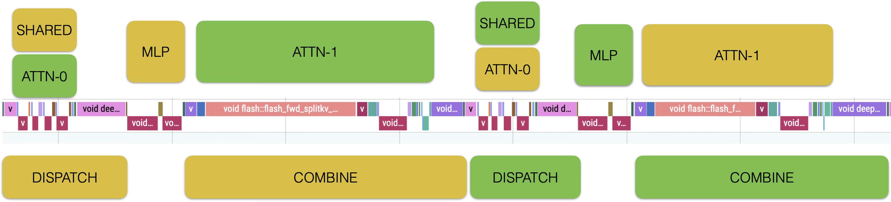

DeepSeek Replay技术报告#
概述#
DeepSeek-V3在多项评估中表现出色，成为最受关注的开源大模型之一。由于其大规模MoE架构，优化推理性能是工程部署的关键挑战。2月，DeepSeek团队相继开源了DeepEP、DeepGEMM、FlashMLA和EPLB等关键组件。基于开源社区的工作，我们完成了RTP-LLM的优化工作，与DeepSeek推理系统性能对齐。
RTP-LLM是阿里巴巴爱程技术开发的LLM推理加速引擎，主要服务于阿里巴巴集团内部业务。本文将分享实现过程中的一些关键技术点、不足和思考，以此感谢开源社区的帮助。相关代码正在整理和重构中，完整代码和复现方法将尽快更新。
根据DeepSeek推理系统概览中的介绍
总输入token：608B，其中342B token（56.3%）命中磁盘KV缓存。
总输出token：168B。平均输出速度为每秒20-22个token，每个输出token的平均kvcache长度为4,989个token。
每个H800节点在预填充期间提供约73.7k token/s的输入吞吐量（包括缓存命中）或在解码期间提供约14.8k token/s的输出吞吐量。
在实际生产服务中，DeepSeek推理系统实现了每个H800节点32.2K的预填充吞吐量和每个H800节点14.8K TPS的解码吞吐量。在RTP-LLM测试中，使用4K输入/2K输出，在1.6s TTFT和50ms ITL约束下，我们实现了每个H800节点42.6K TPS的预填充性能和每个H800节点14.7K TPS的解码性能。
测试结果#
设置#
我们在阿里云灵骏H800 RoCE环境中部署，采用PD分离和分布式EP架构，设置TP=1，DP=EP=GPU数量。Prefill单实例规格为4个节点32个GPU，Decode单实例规格为18个节点144个GPU。测试期间，我们使用了4个Prefill实例和1个Decode实例，共计272个H800 GPU。
测试采用4:1的PD实例比例，这不是完美的PD比例。在实际生产负载中，将面临更复杂的输入/输出长度波动，需要与调度系统集成，动态弹性调整PD实例数量。
预填充#

预填充实例使用32 EP部署。在极端压力下，单个GPU执行2个4K请求需要1.5秒，吞吐量为5333 TPS。
测试未模拟缓存的影响，这是后续需要改进的领域之一。
RTP-LLM也支持混合TP/DP/EP部署。建议在高算力H800 GPU上使用TP=1；在算力受限的卡如H20上，根据延迟约束选择TP=2/4。
解码#

解码实例使用144 EP部署（128 + 16冗余）。由于实现差异，主机端耗时减少2ms，但设备端稍慢。分析表明原因是RoCE与IB网络差异、缺少CUDA Graph优化以及一些内核实现较慢。这也是未来优化的方向。

上图显示了解码阶段的压力测试曲线。在较低并发情况下，单个用户可达到42 TPS。在13200并发时，达到每个用户20 TPS的SLA限制，单GPU吞吐量为1850 TPS。
在DeepEP开源之前，我们通过All2All实现了分布式EP，在吞吐量方面相比单节点设置有显著提升，但延迟过高。除了高网络延迟外，All2All还带来了严重的主机同步开销，这对网络和计算时间的重叠也是不利的。建议不支持DeepEP机制的GPU可以等效实现纯设备All2All以达到相似性能；ASIC加速卡可以更进一步，直接执行MoE/Dispatch/Combine重叠。
实现与技巧#
EPLB#
下图显示了EPLB延迟影响测试。我们发现EP平衡状态受测试数据显著影响，测试数据无法完全模拟真实应用负载状态。EP负载均衡策略仍是未来需要深入探索的领域。

微批次与重叠#
为了使GPU计算和网络通信能够重叠，我们完全实现了Prefill/Decode微批处理解决方案，并将其与DeepEP的重叠机制集成。在此过程中，我们做出了以下观察：
无论是在Prefill还是Decode阶段，由于Dispatch阶段传输FP8张量而Combine阶段传输FP16张量，Combine阶段的通信时间显著高于Dispatch阶段。因此，在设计重叠解决方案时，需要考虑更大的时间块来覆盖Combine阶段通信。在推理阶段引入量化通信是未来的潜在改进方向。
对于Prefill阶段，Attention所花费的时间占比相对较小。最终的Attention+MoE门控部分和MoE MLP部分花费的时间相近，都能覆盖Combine阶段相对较长的通信时间。只需要请求分段，两个MicroBatch的计算/通信就可以交错进行。一个重要细节是共享专家计算总是与Combine部分重叠，以确保覆盖Combine的计算时间多于覆盖Dispatch的时间。
考虑到Qwen3模型，虽然它没有共享专家，但在Decode阶段仍可采用相同的重叠方案，使用Attention算子作为边界插入MLP计算，分别覆盖前后Dispatch和Combine通信时间。在框架层面，为了兼容DeepEP和Vanilla All2All通信重叠功能并考虑扩展到各种硬件，我们开发了统一的通信回调接口，使MicroBatch功能能够轻松扩展到其他加速卡。
MTP#
我们在先前实现的通用投机采样框架中增加了MTP投机采样支持。MTP是DeepSeek ITL优化中最关键的环节。在解码阶段增加计算强度的唯一方法是增加GEMM BS。KV缓存容量限制了全局BS，而MTP只需要BS/2就能达到与原来相同的计算强度。启用MicroBatch进行计算-通信重叠会产生延迟增加的副作用。MTP可以减少平均ITL并补偿MicroBatch引起的延迟。双赢的局面。
PD分离#
在DeepSeek-V3模型中，由于Prefill和Decode计算需求存在显著差异以及不同的EP策略，PD分离部署是必要的选择。我们扩展了对不同TP规格的Prefill-Decode部署的支持，这对低算力卡尤其重要。我们实现了两种PD负载均衡策略：基于KV缓存的均衡和基于BS的均衡。测试数据的BS方差较小，在高压和高EP流量下，BS均衡对Dispatch/Combine延迟更重要。在生产环境中，需要综合考虑BS方差和Seq方差因素，或者可以根据流量特征进一步拆分Decode实例。
DeepEP / 网络#
DeepEP主要针对IB环境进行优化。面对实际生产中多样化的底层环境和技术栈，为了实现工程部署和最佳性能，我们进行了以下优化和改进：
双上联性能修复：通过深入分析Normal内核（少数QP，大消息）和低延迟内核（多数QP，小消息）的特性，我们提供了一个纯IAAS层修复功能，不会引入性能开销。具体而言，我们在NVSHMEM层为Normal内核和低延迟内核提供了消息级和队列级负载均衡解决方案。优化版本在保持双上联稳定性优势的同时，实现了可匹配甚至略微超越单上联IB网络解决方案的通信性能。
通信模式优化：通过综合考虑节点内和节点间网络架构，我们优化了节点内和节点间流量模式，充分利用系统中的可用链路，实现了网络轨道和层面之间的流量平衡，避免了网络流量冲突和碰撞，最大化整体系统通信效率。在低延迟通信模式下，通信延迟可减少60%以上。
节点内拓扑自修复能力：异常的节点内拓扑报告会影响网卡和GPU之间的通信链路，导致网络性能下降。为解决此问题，我们实现了节点内拓扑自修复功能，屏蔽上层与底层服务器硬件和软件差异，确保不同类型机器间GPU和网卡的亲和关系。
虚拟化环境适配：为了灵活支持复杂多变的业务场景，我们支持基于商业卡硬件SRIOV虚拟化的高性能网络解决方案，解决了SRIOV与DeepEP的适配问题，并通过优化完成大规模部署，使VF和PF性能保持一致。
CUDA内核融合#
我们对CUDA内核执行流程进行了详细分析，并根据模型特点进行了优化：
将部分矩阵乘法移至BF16格式计算。FP8矩阵乘法由于在规模不足时需要量化操作而产生更大的开销。
将旋转Embedding中的转置操作提前到权重加载阶段，以避免引入元素级运算符。
在GEMM计算之前融合量化和转置操作。
未来计划包括融合激活函数和量化操作。

PDL#
Hopper架构引入了可编程依赖启动（PDL），允许同一CUDA流上的两个相邻内核重叠执行，使后者内核能够在前者内核执行期间提前完成初始化和其他工作。通过在GEMM内核中引入PDL，我们可以在其他内核（如量化内核）计算期间提前执行GEMM初始化操作，从而提高整体系统性能。
PDL的引入也为内核级优化带来了更多可能性，例如GEMM权重预取。通过PDL将量化操作与GEMM重叠后，可以在GEMM内核的重叠部分添加权重预取操作，这样当MMA实际执行时，所需的权重张量已在L2缓存中，从而达到加速GEMM内核的目的。
框架开销#
整体框架开销主要集中在两个部分：一部分是相邻前向步骤之间的主机开销，约1.5ms；另一部分是内核启动开销，约2ms。
前向步骤之间主机开销的主要问题是我们的庞大动态批处理实现，其性能开销与BS呈线性关系。我们对动态批处理实现进行了轻量化改造，对不依赖于下一步的操作进行异步或多线程处理。理想情况下，在128 BS条件下，我们可以实现低于200微秒的性能。当前过多的主机开销主要源于MTP情况下的额外动态批处理，这可以进一步优化掉。
内核启动开销主要是由于GPU内核过多。启用MicroBatch后，GPU内核数量翻倍，使问题更加严重。更好的解决方案是CUDA Graph。在这里，性能和架构复杂性需要平衡。RTP-LLM框架已经通过C++实现避免了主机端启动开销问题。然而，我们观察到即使启动速度远超内核执行速度，GPU设备级别仍存在一些启动开销，CUDA Graph可以在一定程度上缓解这个问题。我们期待NVIDIA能在未来的驱动或硬件版本中彻底解决这个问题。
权重加载#
模型权重加载速度直接影响研发和部署效率。对于671B权重，我们通过优化实现了分钟级加载，具体方案如下：
权重预处理和格式预转换。RTP-LLM在加载过程中需要对权重执行分割、转置等操作。我们设计了一个预处理系统，提前将原始权重转换为框架所需的权重格式。预处理后，加载过程中的计算开销被消除。
直接IO + 固定内存加速大文件读取。为了解决单个权重文件超过100GB的I/O瓶颈，我们使用直接IO绕过系统页面缓存机制，通过CUDA固定内存建立固定内存池，并消除了内核空间和用户空间之间的多次内存拷贝。
局限性和未来工作#
在算子性能方面，我们尚未完全与DeepSeek对齐。预填充注意力和解码量化的核⼼算子存在一定的性能差距，需要进一步优化。此外，CUDA Graph也是一个关键的改进方向。
EPLB本质上需要算法设计和系统工程之间的深度协作。目前还没有通用且高效的解决方案。对于特定应用场景下的动态负载分布特征，需要探索更多自适应和鲁棒的负载均衡策略。
MicroBatch并非计算-通信重叠的唯一解决方案。结合FLUX和Triton-distributed等优秀工作，多种并行模式融合是未来值得探索的方向。
在DeepSeek-V3上，纯EP解决方案与6K长度的短序列任务匹配良好。对于更长序列场景，受限于KV缓存容量，需要设计更复杂的并行模式来提高MoE计算效率。
在大规模测试和部署实践中，我们观察到多个单个GPU故障导致整个144 GPU解码实例失败的情况。为了解决这个问题，我们在PD分离架构中引入了ACCL结合服务发现机制，构建了具有弹性和高可用性的无服务器PD服务。我们计划未来进一步结合任务调度器和通信库功能，构建具有高容错性和弹性扩展能力的无服务器CCL（集体通信库）框架。
与H800不同，我们生产环境中可扩展的异构计算卡通常具有较低的算力。在这种情况下，在TTFT和ITL约束下优化吞吐量是一个极具挑战性的问题。同时，如何在各种卡类型和代际间良好地优化性能也是我们需要努力解决的问题。
感谢#
经过两个月的持续努力，我们已与DeepSeek推理引擎的性能对齐。我们感谢开源社区分享优秀的开源模型，如DeepSeek、Qwen和Llama，以及优秀的工程引擎和优化工具，如FasterTransformer、TensoRT-LLM、FlashAttention、FlashInfer、Transformers、vLLM和SGLang。我们相信开源、开放和交流是实现AGI的必由之路。我们希望通过与社区的深入讨论和交流，共同推动AI技术创新和生态繁荣。